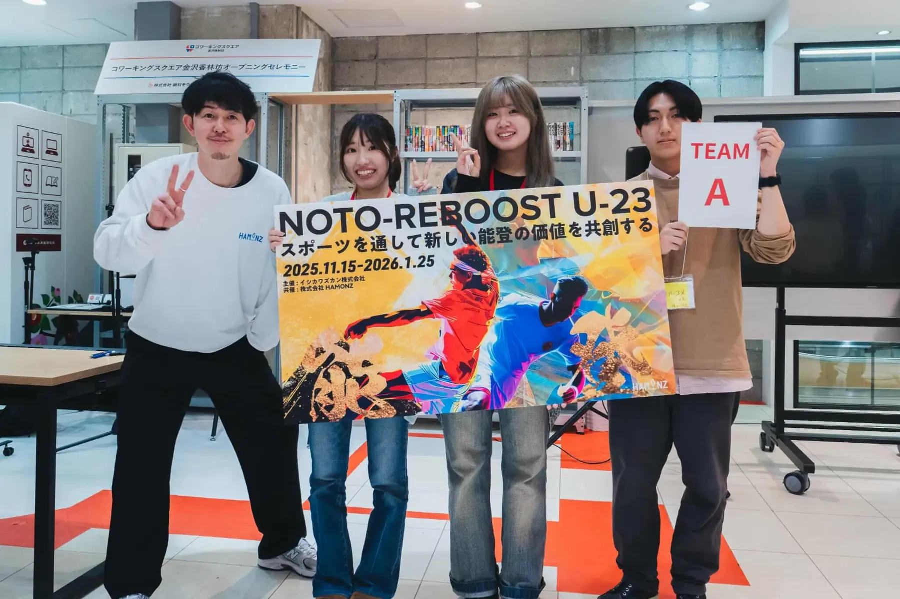

土地を、もう一度使う。
今回の田んぼは、イベントの日だけの遊び場ではありません。使われなくなっていた農地が再び農地として活用されていく流れの中で、9月20日に人がその土地を知るきっかけをつくりました。
私たちの思い
私たちがつくりたかったのは、9月20日の楽しい一日だけではありません。使われなくなった農地にもう一度人が集まり、笑い声が生まれ、その出会いから次の関わりが始まること。その最初の実践を、珠洲市若山町洲巻で行いました。
準備を始めた頃は、イベントを開けば人が来て、そこから自然に地域との関係が広がるように考えていました。でも実際に動いてみると、来てもらうことも、土地を使わせてもらうことも、安全に一日を終えることも、どれも簡単ではありませんでした。だからこそ、終わった今は「開催できた」だけではなく、その過程で見えたことまで残したいと思っています。

現地で感じたこと
私たちは実際に洲巻へ足を運び、田畑や道、暮らしの痕跡が残る一方で、日常的に人が行き交う姿が少なくなっていることを感じました。


洲巻の現状
洲巻は珠洲市若山町にある地域です。震災の影響などを経て住民が離れ、以前に比べて人の関わりが大きく減りました。私たちが現地を訪れたとき、田畑や道、暮らしの痕跡は残っている一方で、日常的に人が行き交う姿はとても少なくなっていました。
「人が少ない」ということは、単に人口の数字が減ることだけではないと思っています。誰かと立ち話をすること、子どもの声が聞こえること、地域の外から友人が訪ねてくること、田畑に人の手が入り続けること。そうした小さな営みが減っていくと、その場所へ行く理由も、関わるきっかけも少しずつ失われていきます。
だから私たちは、最初から大きなことをしようとは考えませんでした。まずは「この日に洲巻へ行ってみよう」と思える理由を一つつくること。それが、泥ん子運動会です。
大切にしたかったのは、「地域のために何かをしてあげる」という形にしないことでした。外から来た私たちが、地域のことを全部分かったつもりになるのは違うと思っています。土地を借りるときも、当日の動線を考えるときも、地域の方や現地で活動してきた方に教えてもらいながら、一つずつ決めました。
洲巻に必要なものを私たちが決めるのではなく、まず自分たちが通い、話を聞き、一緒にできることを探す。その姿勢は、イベントが終わった今も変えたくありません。
なぜ、泥ん子運動会なのか
田んぼに入って、子どもも大人も泥だらけになって、知らない人同士でも同じ競技で笑う。地域の課題を難しく語る前に、「楽しかった」「また来たい」と思える体験から関係が始まってもいいと考えています。
「支援しなければ」ではなく、「面白そうだから行ってみる」「子どもに泥遊びをさせたい」「友人と参加してみたい」。そんな理由で洲巻を訪れた人が、そこで土地を知り、人と出会い、次にまた来る理由を持つかもしれません。
復興という言葉を、遠くから応援するだけで終わらせない。実際にその土地へ行き、人と出会い、また来る理由をつくる。そのきっかけとして、私たちは9月20日に泥ん子運動会を開きました。
田んぼを会場にしたのも、珍しさだけが理由ではありません。普段なら通り過ぎてしまう土地に実際に足を入れ、泥の感触や広さ、周りの景色まで体で知ると、その場所は急に「知らない場所」ではなくなります。写真で見るだけだった土地に、自分の記憶が一つ加わる。その感覚をつくりたかったのです。
楽しい体験だけで地域の課題が解決するとは思っていません。でも、関わりが始まらなければ、その先もありません。泥ん子運動会だけで課題が解決するとは考えていません。まず洲巻へ来て、人や土地を知るきっかけにしたいと考えています。

この土地で大切にすること
私たちが大切にしたいことを、三つに整理しています。
今回の田んぼは、イベントの日だけの遊び場ではありません。使われなくなっていた農地が再び農地として活用されていく流れの中で、9月20日に人がその土地を知るきっかけをつくりました。
義務感ではなく「楽しそう」「行ってみたい」から始まる関係を大切にします。最初の理由は小さくていいと考えています。
9月20日に出会った地域の方、学生、家族、ボランティア、企業や団体とのつながりを残し、次の活動へ引き継ぎます。
実際にやってみて
9月20日の競技参加者は15名、見学を含めた来場者は約30名でした。当初思い描いていたより大きなイベントではありません。それでも、普段は人の声が少ない田んぼに子どもたちが入り、大人も学生も同じ競技で泥だらけになり、笑い声が続いた時間は確かにありました。
人数だけを見れば、「もっと集められたはず」と思う部分もあります。実際、告知の仕方、申込までの導線、交通手段の分かりにくさ、遠方から能登へ来るハードルなど、改善したいことはたくさん残りました。一方で、来てくれた一人ひとりと話せる規模だったからこそ、誰がどこから来たのか、何を楽しんでくれたのかを近くで見ることができました。
印象に残っているのは、競技そのものより、その前後の時間です。泥を落としながら話したり、子どもと学生が自然に一緒に遊んだり、地域のことを聞いたりする場面がありました。私たちが想像していた「交流」は、特別なプログラムの中ではなく、そういう何気ない時間に生まれていました。
イベントを開くことより、その場でどんな関係が生まれるかを見ること。次に同じような活動をするときは、参加人数だけではなく、そこも大切にしたいと思っています。

うまくいったことだけではありません
初めて一から企画して分かったのは、地域イベントは「面白い内容を考える」だけでは成り立たないということでした。
告知を出せば人が集まるわけではありませんでした。珠洲までの距離、交通手段、予定の合わせやすさ、初めてのイベントへの不安。参加を決めるまでには、こちらが思っていた以上に多くの壁があります。
田んぼの深さ、足元、駐車や移動の導線、着替えや泥を落とす場所。机の上では気づけないことが多く、何度も現地を見ながら準備を変えました。
イベント当日は分かりやすいゴールがあります。でも本当に難しいのはその後です。誰と連絡を取り続けるのか、土地とどう関わるのか、次の活動へ何を残すのか。ここからの方が長いと感じています。
9月20日の先へ
9月20日に人が集まったからといって、それだけで洲巻の課題が解決するわけではありません。むしろ私たちにとって、その日がスタートです。
一度来た人が、半年後や一年後にも能登のことを思い出す。別の活動に参加する。友人を連れて戻ってくる。地域の方とまた話す。そうした小さな再訪が増えていけば、「イベントに来た人」が少しずつ「能登に関わる人」へ変わっていくかもしれません。
そのためには、毎回大きな企画を打ち上げる必要はないと思っています。農作業を手伝う、地域を歩く、誰かに会いに行く。そうした戻って来やすい関わり方を増やしたいです。
実施後に分かったことを記録し、次年度以降の活動へつなげます。
当日だけの関係にせず、地域・学生・団体同士が再びつながれる形をつくります。
一度来た学生が、次は友人を連れて来る。そうやって、もう一度来る人を少しずつ増やしたいです。
人が遊んだ土地が、その後どう使われていくのか。農地再生と人の関わりを切り離さず考えます。
学生としてできること
農地の復旧、農業の継続、地域の暮らし、震災からの復興。どれも学生数人だけで解決できる話ではありません。専門の知識も、資金も、長年の地域経験も、私たちには足りないものがたくさんあります。
だからこそ、自分たちにできないことまで抱え込まないようにしています。農業のことは農業を続けてきた方に聞く。地域のことは地域の方に聞く。安全面や制度のことは、詳しい人に助けてもらう。分からないことを分からないまま進めないことも、活動を続けるために大切だと思っています。
その一方で、学生だから動きやすいこともあります。知らないからこそ素直に聞けること、友人を誘って現地へ行けること、面白そうな企画を考えて試せること、SNSや学校を通じて同世代へ伝えられること。私たちは専門家の代わりになるのではなく、同世代の人が能登へ行くきっかけをつくる役割を担いたいです。
私たち自身も、関わり始めた側です
私たち自身も、現地へ行き、土地を見て、人と話し、協力してくださる方に出会いながら、少しずつこの企画を形にしてきました。
だからこそ、参加する人にも最初から大きな責任を求めたいわけではありません。「面白そうだから行ってみる」でもいい。「子どもと一緒に参加したい」でもいい。その一歩が、能登との新しいつながりになるかもしれないからです。
誰か一人だけが頑張るのではなく、関わる人が増えながら続いていく活動にしたいと思っています。
今回も、土地を貸してくださった方、地域で調整してくださった方、協賛や物品提供をしてくださった企業、情報を広げてくださった方、当日一緒に動いてくれたボランティアがいなければ実施できませんでした。表に見えるのは一日のイベントでも、その後ろにはたくさんの人の時間があります。
だから、次に何かをするときも「自分たちだけでやった」と言える活動にはしたくありません。関わってくれた人の名前や役割を残し、次の人が入りやすい形にしていくことも、私たちの仕事だと思っています。

NOTO Re:Bloom
使われなくなった土地にもう一度役割が生まれること。人の少なくなった場所に笑い声が戻ること。能登を知らなかった若者が、次は友人を連れて戻ってくること。そんな小さな変化を一つずつ増やしていくことを、私たちはRe:Bloomと呼びたいと思っています。
「元に戻す」だけではなく、今の能登でできる関わり方をつくる。以前と同じ景色には戻らなくても、別の形で人が集まり、土地に役割が生まれれば、それも一つの再生だと思います。
泥臭い挑戦で、能登を咲かせる。私たちのスローガンにある「泥臭い」は、きれいに成功することだけを目指さないという意味でもあります。うまくいかなかったことも含めて残し、次は少し良くする。その積み重ねを続けていきます。
失われたものを単純に元へ戻すのではなく、今の能登で続けられる関わり方を考えます。
土地、農業、地域、学生、家族。違う立場の人たちが知り合い、次も会える関係を増やしたいです。
これからも
私たち自身も、今回の活動で洲巻との関わりが終わったとは思っていません。次の春もまた洲巻へ行き、地域の方と話しながら次の活動を考えたいです。大きな企画でなくても、顔を出し、話をし、手を動かすことを続けます。
私たちも、最初から正解が分かっているわけではありません。現地へ行って話を聞き、そのたびに次のやり方を考えています。途中から参加してくれる人も歓迎します。
「能登に何かしたい」と大きく構えなくても、まず一度来てみる。その一歩から始まる関係を、これからもつくっていきます。
開催当日の実績と記録を公開しています。